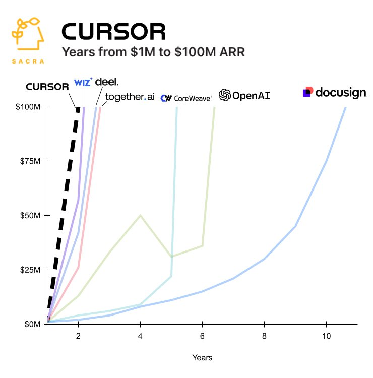
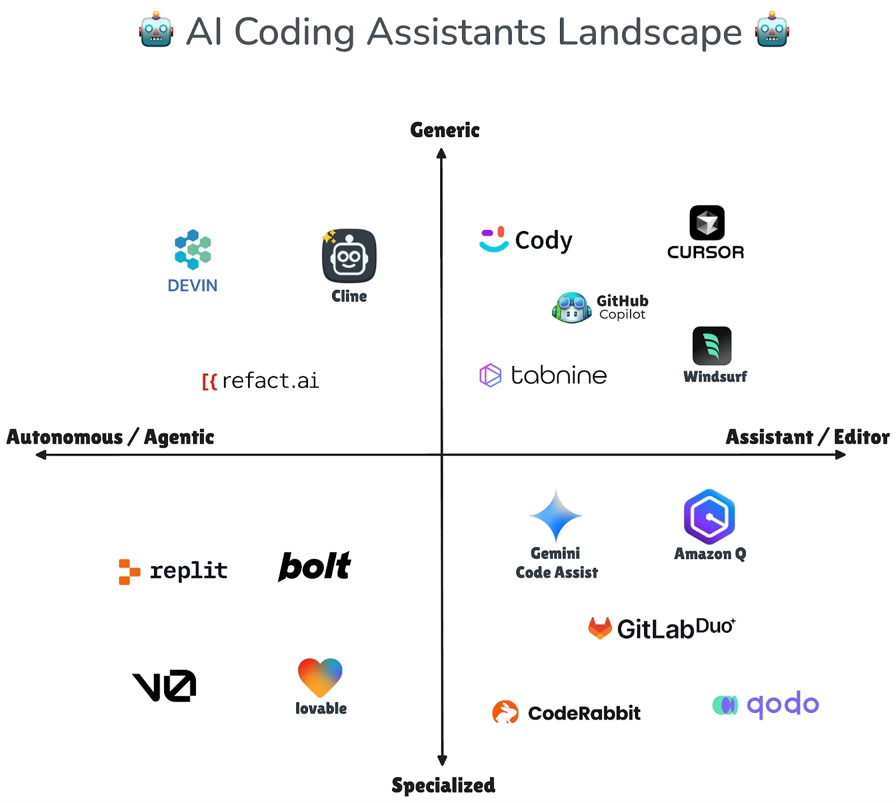
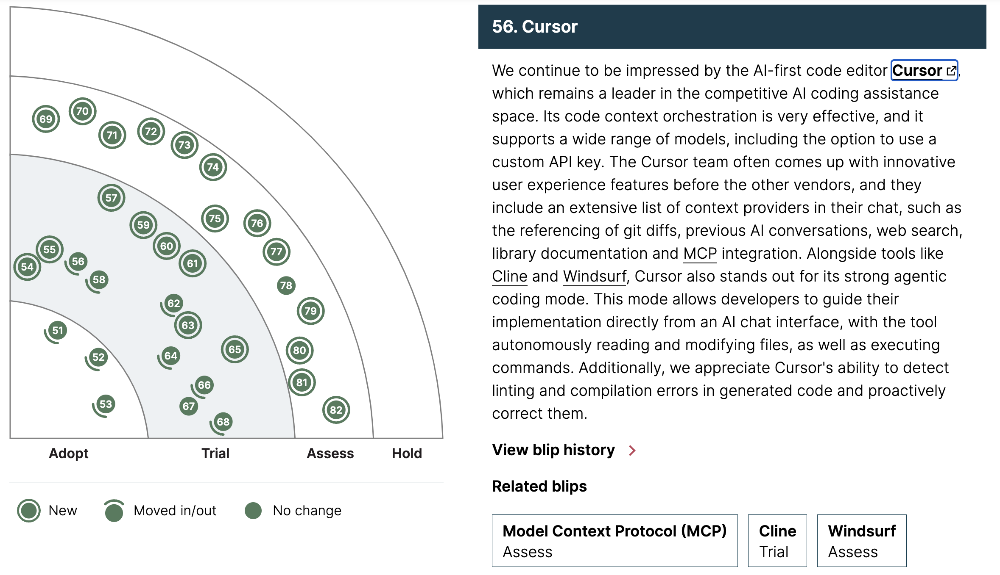
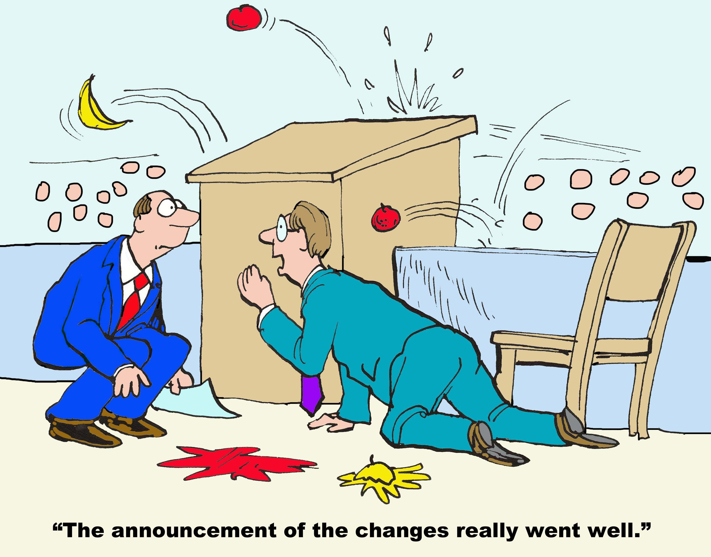
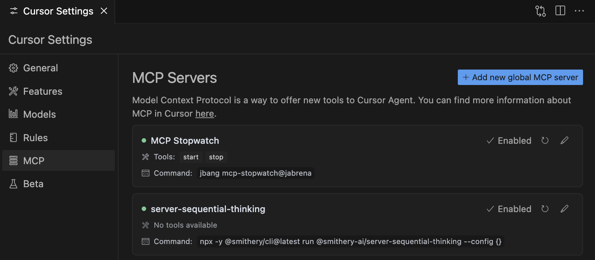
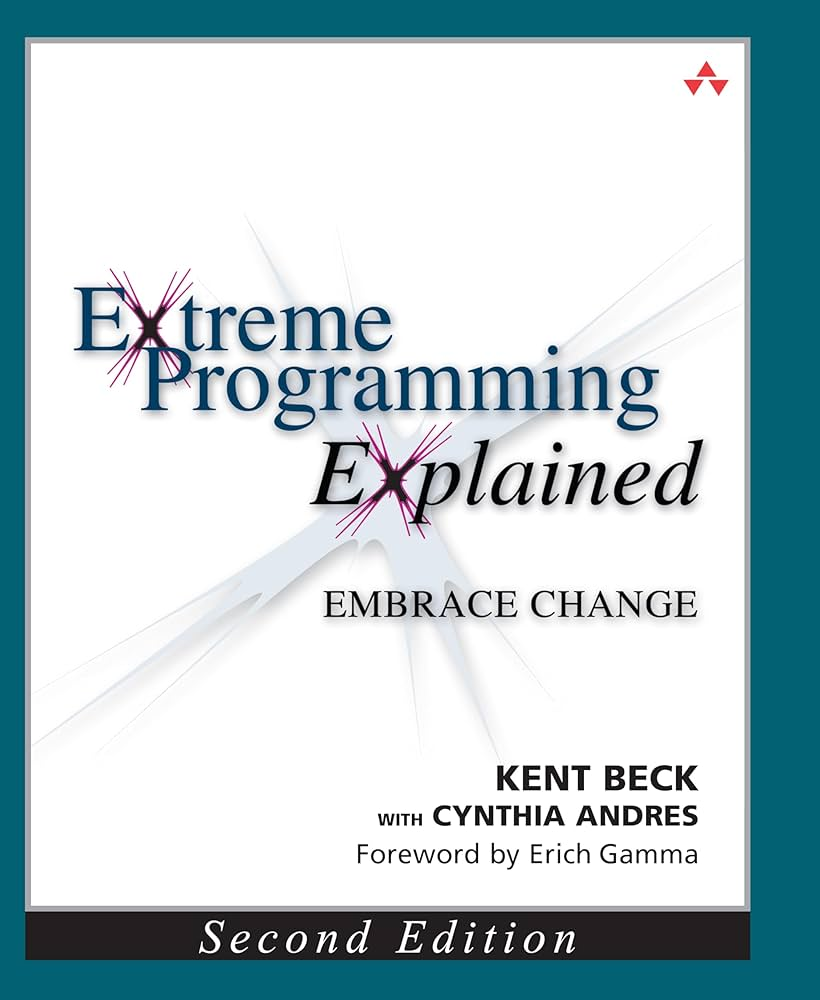
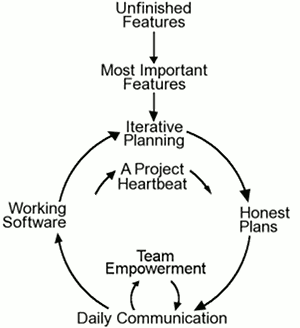
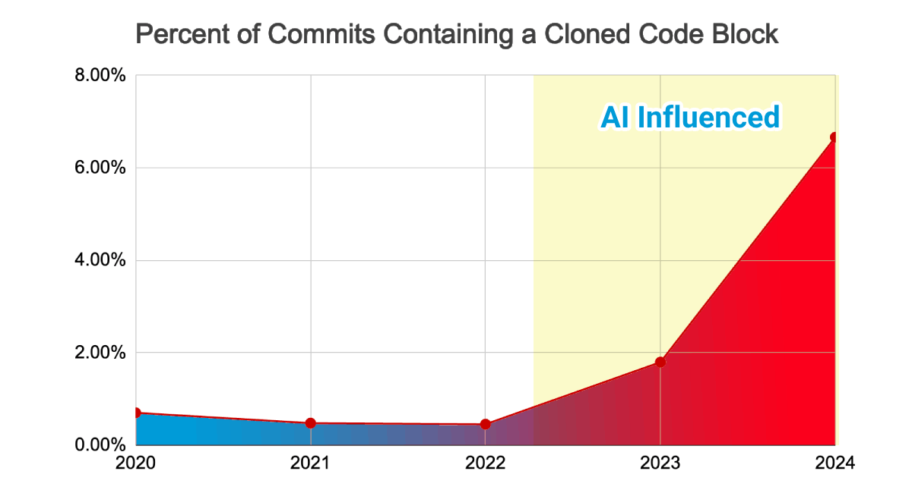

101 Cursor AI
Learning to use for Java Enterprise projects
“There is no favorable wind for the sailor who doesn't know where to go”
-Seneca
“If you don't know how to ask the right question, you won't discover anything.”
- W. Edwards Deming
“You can't fake quality any more than you can fake good food.”
- William S. Burroughs
Who I am
|
|
Juan Antonio Breña Moral Technical Product Owner for Shared Platform @ Atradius CIO Twitter | Github | Linkedin |
|
Quotes: "Lead me, follow me, or get out of my way." "Pressure makes diamonds." - George S. Patton Jr. |
|
Agenda
- Who I am
- Goals
- Introduction
- Reviewing the IDE
- Cursor development approach
- Demo
- Limitations & Concerns
- Q&A
Goals
The talk is designed to explain in 60 minutes, how to use Cursor AI for Java Enterprise software development.

Introduction
Java was released on May 23, 1995, available only on Sun Microsystem's Solaris operating system.
During the last 3 decades, Software engineers implemented Java enterprise solutions by hand using their favorite IDE...
IBM Visual Age for Java
IntelliJ IDEA
VSCode
But in 2023, Cursor appeared in the market with huge success...
 Source: https://x.com/kubotamas/status/1887007803275141436But... Cursor is not alone in this new niche:
 Source: https://www.infoq.com/articles/ai-trends-disrupting-software-teams/And this success is recognized in Radar 2025:
 Source: https://www.thoughtworks.com/radar/tools/summary/cursorSo... let's dig into this new tool and share some ideas...
Reviewing the IDE
The whole talk was prepared with the folowing Cursor version:

Reviewing the IDE
- Security features
- Business
- Privacy mode
- Trust
- Context features
- Settings
- Modes (Agent, Ask, Manual)
- Cursor rules
- Symbols
- MCP integration
Security features
Add new cloud tools in large companies is not an easy task sometimes...
So... review the security features to avoid issues...
Business

- Enforce privacy mode org-wide
- SAML/OIDC SSO
Privacy mode
 Source: https://www.cursor.com/privacy
Source: https://www.cursor.com/privacy
Trust
Cursor operates a continuously monitored and 3rd-party audited security program.

SOC 2 is a compliance framework used to evaluate and validate an organizations information security practices.
Source: https://trust.cursor.com/Settings / Codebase Indexing

Review the usage of .cursorignore file to avoid indexing sensitive data.
Source: https://www.cursor.com/security#codebase-indexingSettings / Docs

Learn how to use, add, and manage custom documentation as context in Cursor using @Docs
Source: https://docs.cursor.com/context/@-symbols/@-docs#docs
Modes

Ask Mode
- Ask questions about specific code sections
- Get explanations of complex functions
- Find code patterns and examples
- Discover and understand your codebase
Agent Mode
- Make codebase-wide changes and refactoring
- Implement new features from requirements
- Debug complex issues across multiple files
- Generate tests and documentation
- Maintain consistency across your entire project
Cursor rules
Using rules in Cursor you can control the behavior of the underlying model. You can think of it as instructions and/or a system prompt for LLMs.
Cursor rules

Symbols
 Source: https://docs.cursor.com/context/@-symbols/overview
Source: https://docs.cursor.com/context/@-symbols/overview
MCP servers
The Model Context Protocol (MCP) is an open protocol that standardizes how applications provide context and tools to LLMs. Think of MCP as a plugin system for Cursor - it allows you to extend the Agent's capabilities by connecting it to various data sources and tools through standardized interfaces.
Source: https://docs.cursor.com/context/model-context-protocolMCP servers

Cursor development approach
 Source: https://levelup.gitconnected.com/ai-powered-documentation-driven-development-supercharge-your-coding-workflow-3f6125915e8f
Source: https://levelup.gitconnected.com/ai-powered-documentation-driven-development-supercharge-your-coding-workflow-3f6125915e8f
Pair programming

Source: http://www.extremeprogramming.org/Agile process
A smart tool doesn't replace a Senior Software Engineer

SLDC
 Source: https://datarob.com/essentials-software-development-life-cycle/
Source: https://datarob.com/essentials-software-development-life-cycle/
Use cases
 Source: https://developers.redhat.com/blog/2016/12/09/spring-cloud-for-microservices-compared-to-kubernetes
Source: https://developers.redhat.com/blog/2016/12/09/spring-cloud-for-microservices-compared-to-kubernetes
Structurizr

docker run -it --rm -p 9000:8080 -v \
$(pwd)/structurizr:/usr/local/structurizr \
structurizr/onpremises:2024.12.07
open http://localhost:9000
Prompt: Use the @20250320-1.md as Prompt and analyze implement & test the following images to understand the required development.
Add in the prompt:
- Input OAS
- Third party OAS
- Database schema
- C4 Diagram
- UML Sequence Diagram
Use cases

Error = Actual value - Predicted value
Source: https://ecampusontario.pressbooks.pub/introstats/chapter/13-3-standard-error-of-the-estimate/It is recommend to increase the efficiency, reducing the ambiguity.
Limitations & Concerns
Cognitive load
 Source: https://www.barefootteflteacher.com/p/what-is-cognitive-load-theory
Source: https://www.barefootteflteacher.com/p/what-is-cognitive-load-theory
Technical debt
 Source: https://www.gitclear.com/ai_assistant_code_quality_2025_researchNotes
- Everything in main branch is responsability of the team, not the AI
- Review periodically if the AI code generated is mastered by the team
- The devil is in the details
🙏 🙏 🙏
Thanks